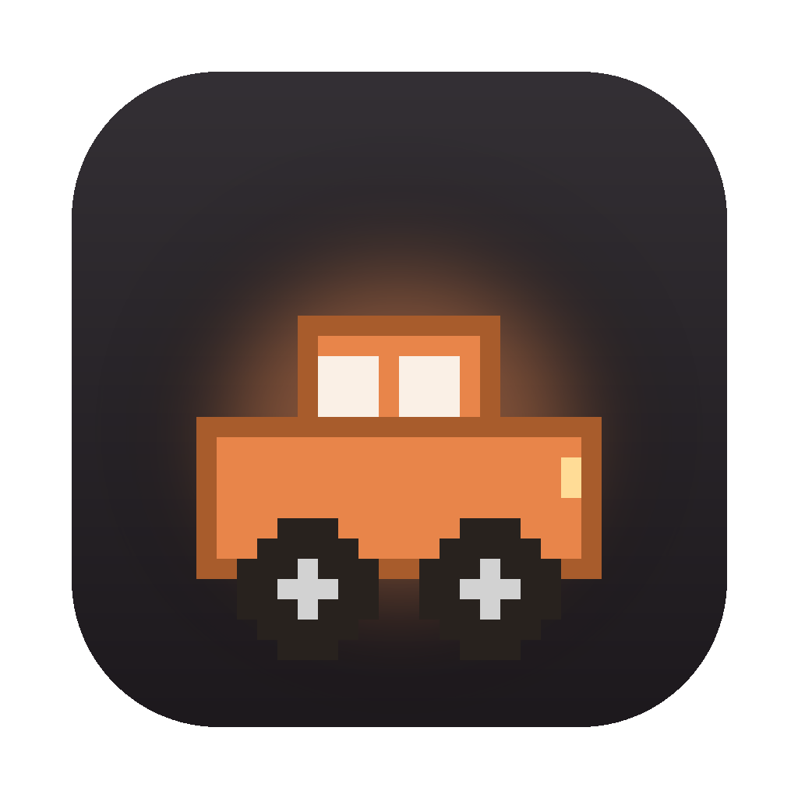
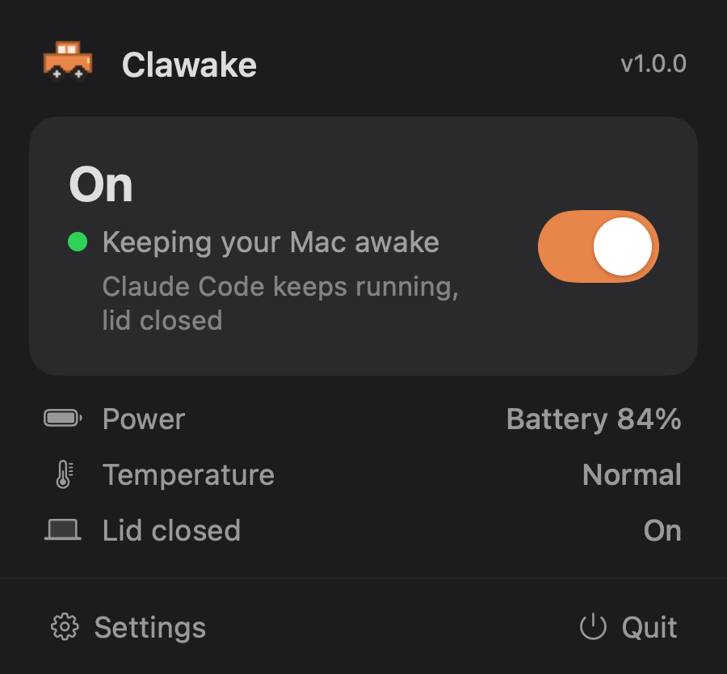

<title>Clawake: Keep Claude Code Running With the Lid Closed</title>
<meta name="viewport" content="width=device-width, initial-scale=1">
<meta name="description" content="Clawake keeps your Mac awake with the lid closed, so a Claude Code run, a build, or a server keeps going after you shut the laptop. A tiny native menu bar app, no external monitor needed.">
<meta property="og:title" content="Clawake: Keep Claude Code Running With the Lid Closed">
<meta property="og:description" content="Start a long Claude Code run, close the laptop, and it keeps working. Clawake holds your Mac awake through a closed lid, so the session stays alive and reachable.">
<meta property="og:type" content="website">
<meta property="og:url" content="https://itaizeilig.github.io/clawake/">
<meta property="og:image" content="https://itaizeilig.github.io/clawake/app-icon.png">
<link rel="canonical" href="https://itaizeilig.github.io/clawake/">
<link rel="icon" type="image/png" href="favicon.png">
<link rel="apple-touch-icon" href="apple-touch-icon.png">
<link rel="preconnect" href="https://fonts.googleapis.com">
<link rel="preconnect" href="https://fonts.gstatic.com" crossorigin>
<link rel="stylesheet" href="https://fonts.googleapis.com/css2?family=Schibsted+Grotesk:wght@400;500;600;700;800&family=Hanken+Grotesk:wght@400;500;600&display=swap">
<style>
  /* Clawake - cinematic warm-dark, single committed theme.
     Every color is painted explicitly so the page holds on any host ground. */
  :root {
    --bg:        #17110C;
    --bg-2:      #1E1710;
    --surface:   #241B13;
    --surface-2: #2B2118;
    --ink:       #F3EBDE;
    --muted:     #B8A995;
    --faint:     #83745F;
    --accent:    #F2883A;
    --accent-hi: #FFA65E;
    --line:      rgba(243, 235, 222, 0.13);
    --line-soft: rgba(243, 235, 222, 0.07);
    --display: "Schibsted Grotesk", system-ui, -apple-system, sans-serif;
    --body: "Hanken Grotesk", system-ui, -apple-system, sans-serif;
    --hero: url('hero.png');
  }

  * { box-sizing: border-box; margin: 0; padding: 0; }
  html { -webkit-text-size-adjust: 100%; scroll-behavior: smooth; }

  body {
    background: var(--bg);
    color: var(--ink);
    font-family: var(--body);
    font-size: 17px;
    line-height: 1.6;
    -webkit-font-smoothing: antialiased;
    text-rendering: optimizeLegibility;
    overflow-x: hidden;
  }

  .wrap { width: 100%; max-width: 1180px; margin-inline: auto; padding-inline: clamp(20px, 5vw, 56px); }
  a { color: inherit; text-decoration: none; }

  /* ---- brand mark ---- */
  .brand { display: inline-flex; align-items: center; gap: 11px; font-family: var(--display); font-weight: 700; font-size: 20px; letter-spacing: -0.015em; color: var(--ink); }
  .brand img { width: 32px; height: 32px; border-radius: 8px; flex: none; box-shadow: 0 4px 16px -4px rgba(0,0,0,0.6); }

  /* ---- top bar ---- */
  header {
    position: absolute; inset: 0 0 auto 0; z-index: 5;
    display: flex; align-items: center; justify-content: space-between;
    padding: clamp(18px, 3vw, 30px) clamp(20px, 5vw, 56px);
  }
  .nav-link {
    font-weight: 600; font-size: 15px; color: #FFFFFF;
    padding: 9px 18px; border: 1px solid rgba(255,255,255,0.35);
    background: rgba(20, 14, 8, 0.35); border-radius: 999px;
    backdrop-filter: blur(6px); -webkit-backdrop-filter: blur(6px);
    transition: border-color .2s, background .2s;
  }
  .nav-link:hover { border-color: var(--accent); background: rgba(242, 136, 58, 0.22); }

  /* ---- hero ---- */
  .hero {
    position: relative; min-height: 92vh; display: flex; align-items: center;
    background-image: var(--hero);
    background-size: cover; background-position: 62% center;
    isolation: isolate;
  }
  .hero::before {
    content: ""; position: absolute; inset: 0; z-index: 1;
    background:
      linear-gradient(90deg, rgba(11, 7, 4, 0.92) 0%, rgba(11, 7, 4, 0.64) 34%, rgba(11, 7, 4, 0.12) 62%, rgba(11, 7, 4, 0) 82%),
      linear-gradient(0deg, rgba(11, 7, 4, 0.55) 0%, rgba(11, 7, 4, 0) 42%);
  }
  .hero .wrap { position: relative; z-index: 2; width: 100%; }
  .hero-copy { max-width: 600px; padding-block: 11vh; }

  .eyebrow {
    display: inline-flex; align-items: center; gap: 10px;
    font-family: var(--body); font-weight: 600; font-size: 12.5px;
    letter-spacing: 0.16em; text-transform: uppercase; color: var(--accent-hi);
    margin-bottom: 24px;
  }
  .eyebrow::before { content: ""; width: 24px; height: 1px; background: var(--accent); }

  h1 {
    font-family: var(--display); font-weight: 700;
    font-size: clamp(2.4rem, 4.8vw, 3.7rem); line-height: 1.02;
    letter-spacing: -0.03em; text-wrap: balance; color: #FCF6ED;
  }
  h1 .soft { color: var(--muted); }

  .lede {
    margin-top: 24px; font-size: clamp(1.05rem, 1.5vw, 1.22rem);
    line-height: 1.55; color: #E9DFD0; max-width: 42ch;
  }

  .cta-row { display: flex; flex-wrap: wrap; align-items: center; gap: 16px 26px; margin-top: 38px; }
  .btn {
    display: inline-flex; align-items: center; gap: 10px;
    font-family: var(--body); font-weight: 600; font-size: 16px;
    padding: 14px 27px; border-radius: 999px; cursor: pointer;
    transition: transform .15s ease, box-shadow .2s ease, background .2s ease;
  }
  .btn-primary {
    background: var(--accent); color: #201207;
    box-shadow: 0 10px 34px -10px rgba(242, 136, 58, 0.7);
  }
  .btn-primary:hover { background: var(--accent-hi); transform: translateY(-2px); box-shadow: 0 16px 42px -12px rgba(242, 136, 58, 0.82); }
  .btn-primary svg { width: 15px; height: 18px; }
  .btn-ghost { color: var(--ink); font-weight: 600; }
  .btn-ghost .arr { display: inline-block; transition: transform .2s ease; color: var(--accent-hi); }
  .btn-ghost:hover .arr { transform: translateX(4px); }

  .meta { margin-top: 26px; font-size: 13.5px; color: var(--muted); letter-spacing: 0.01em; }

  /* ---- reveal ---- */
  .rise { opacity: 0; transform: translateY(18px); animation: rise .9s cubic-bezier(.2,.7,.2,1) forwards; }
  .rise.d1 { animation-delay: .05s; }
  .rise.d2 { animation-delay: .16s; }
  .rise.d3 { animation-delay: .27s; }
  .rise.d4 { animation-delay: .38s; }
  @keyframes rise { to { opacity: 1; transform: none; } }

  /* ---- why section ---- */
  .why { background: var(--bg-2); border-top: 1px solid var(--line-soft); padding-block: clamp(66px, 10vw, 122px); }
  .sec-eyebrow {
    font-weight: 600; font-size: 12.5px; letter-spacing: 0.16em; text-transform: uppercase;
    color: var(--accent-hi); margin-bottom: 16px;
  }
  .sec-head {
    font-family: var(--display); font-weight: 600; font-size: clamp(1.75rem, 3.4vw, 2.5rem);
    letter-spacing: -0.025em; line-height: 1.08; text-wrap: balance; max-width: 20ch;
    margin-bottom: 58px; color: #FCF6ED;
  }
  .sec-head .hl { color: var(--accent); }
  .grid { display: grid; grid-template-columns: repeat(3, 1fr); gap: clamp(18px, 2.4vw, 32px); }
  .card {
    background: var(--surface); border: 1px solid var(--line-soft);
    border-radius: 18px; padding: 34px 30px;
    transition: border-color .25s ease, transform .25s ease, background .25s ease;
  }
  .card:hover { border-color: var(--line); transform: translateY(-3px); background: var(--surface-2); }
  .card .ic {
    width: 46px; height: 46px; display: grid; place-items: center;
    border-radius: 13px; background: rgba(242, 136, 58, 0.13);
    color: var(--accent); margin-bottom: 24px;
  }
  .card .ic svg { width: 24px; height: 24px; }
  .card h3 { font-family: var(--display); font-weight: 600; font-size: 1.3rem; letter-spacing: -0.015em; margin-bottom: 11px; color: var(--ink); }
  .card p { color: var(--muted); font-size: 15.5px; line-height: 1.62; }

  /* ---- download band ---- */
  .band { position: relative; padding-block: clamp(78px, 11vw, 136px); text-align: center; overflow: hidden; }
  .band::after {
    content: ""; position: absolute; left: 50%; top: 42%; z-index: 0;
    width: 640px; height: 640px; transform: translate(-50%, -50%);
    background: radial-gradient(circle, rgba(242, 136, 58, 0.17), rgba(242, 136, 58, 0) 62%);
    pointer-events: none;
  }
  .band > * { position: relative; z-index: 1; }
  .band-icon { width: 82px; height: 82px; border-radius: 19px; margin: 0 auto 30px; box-shadow: 0 18px 46px -14px rgba(0,0,0,0.75); }
  .band h2 {
    font-family: var(--display); font-weight: 700; font-size: clamp(2.4rem, 6vw, 3.9rem);
    letter-spacing: -0.035em; line-height: 1; margin-bottom: 20px; color: #FCF6ED;
  }
  .band p { color: var(--muted); max-width: 48ch; margin: 0 auto 34px; font-size: 1.05rem; }
  .band .meta { margin-top: 22px; }

  /* ---- footer ---- */
  footer {
    border-top: 1px solid var(--line-soft); padding-block: 34px;
    display: flex; flex-wrap: wrap; gap: 14px; align-items: center; justify-content: space-between;
    color: var(--faint); font-size: 14px;
  }
  footer .brand { font-size: 16px; color: var(--muted); }
  footer .brand img { width: 26px; height: 26px; }
  footer a { color: var(--muted); }
  footer a:hover { color: var(--ink); }

  /* ---- trust strip ---- */
  .trust { background: var(--bg-2); border-top: 1px solid var(--line-soft); border-bottom: 1px solid var(--line-soft); }
  .trust .wrap { display: flex; flex-wrap: wrap; justify-content: center; align-items: center; gap: 12px 30px; padding-block: 22px; }
  .trust span { display: inline-flex; align-items: center; gap: 8px; font-size: 14px; font-weight: 500; color: var(--muted); }
  .trust svg { width: 16px; height: 16px; color: var(--accent); flex: none; }

  /* ---- product panel ---- */
  .product { position: relative; padding-block: clamp(66px, 10vw, 122px); text-align: center; overflow: hidden; }
  .product::after {
    content: ""; position: absolute; left: 50%; top: 56%; z-index: 0;
    width: 680px; height: 680px; transform: translate(-50%, -50%);
    background: radial-gradient(circle, rgba(242, 136, 58, 0.13), rgba(242, 136, 58, 0) 60%); pointer-events: none;
  }
  .product > * { position: relative; z-index: 1; }
  .product .sec-eyebrow, .product .sec-head { text-align: center; }
  .product .sec-head { margin-inline: auto; margin-bottom: 16px; }
  .product .sub { color: var(--muted); max-width: 44ch; margin: 0 auto 56px; font-size: 1.05rem; }

  .shot { display: inline-block; line-height: 0; border-radius: 18px; overflow: hidden; border: 1px solid var(--line); box-shadow: 0 34px 82px -22px rgba(0,0,0,0.85); }
  .shot img { display: block; width: 366px; max-width: 86vw; height: auto; }

  /* ---- faq ---- */
  .faq { background: var(--bg-2); border-top: 1px solid var(--line-soft); padding-block: clamp(62px, 9vw, 112px); }
  .faq-list { max-width: 780px; }
  .qa { border-top: 1px solid var(--line-soft); padding: 24px 0; }
  .qa:first-child { border-top: none; }
  .qa h3 { font-family: var(--display); font-weight: 600; font-size: 1.16rem; letter-spacing: -0.01em; color: var(--ink); margin-bottom: 9px; }
  .qa p { color: var(--muted); font-size: 15.5px; line-height: 1.62; max-width: 70ch; }

  @media (max-width: 860px) {
    .grid { grid-template-columns: 1fr; }
    .hero { background-position: 68% center; }
    .hero::before { background:
      linear-gradient(0deg, rgba(11,7,4,0.88) 4%, rgba(11,7,4,0.32) 48%, rgba(11,7,4,0.10) 100%),
      linear-gradient(90deg, rgba(11,7,4,0.62), rgba(11,7,4,0.1)); }
    .hero-copy { max-width: 100%; }
  }

  @media (prefers-reduced-motion: reduce) {
    html { scroll-behavior: auto; }
    .rise { animation: none; opacity: 1; transform: none; }
    .btn, .card, .btn-ghost .arr { transition: none; }
  }
</style>

<header>
  <a class="brand" href="#top" aria-label="Clawake home">
    
    Clawake
  </a>
  <a class="nav-link" href="#download">Download</a>
</header>

<section class="hero" id="top">
  <div class="wrap">
    <div class="hero-copy">
      <span class="eyebrow rise d1">Menu bar app for macOS</span>
      <h1 class="rise d2">Keep Claude Code running<br><span class="soft">with the lid closed.</span></h1>
      <p class="lede rise d3">Start a long Claude Code run, close the laptop, and it keeps working. Your session stays alive in your bag or at home while the agent finishes, and you can jump back in remotely from anywhere. No external monitor, no Terminal commands.</p>
      <div class="cta-row rise d4">
        <a class="btn btn-primary" href="https://github.com/ItaiZeilig/clawake/releases/latest">
          <svg viewBox="0 0 14 17" fill="currentColor" aria-hidden="true"><path d="M11.7 12.9c-.2.5-.5 1-.8 1.4-.5.7-.9 1.2-1.3 1.4-.5.4-1.1.6-1.7.6-.4 0-1-.1-1.6-.4-.6-.3-1.2-.4-1.7-.4-.5 0-1.1.1-1.7.4-.6.3-1.1.4-1.5.4-.6 0-1.2-.2-1.8-.7-.4-.3-.9-.8-1.4-1.6C.2 12.8-.1 11.4 0 9.9c.1-1.3.5-2.4 1.3-3.2.6-.6 1.4-1 2.3-1 .4 0 1 .1 1.7.4.7.3 1.1.4 1.3.4.1 0 .6-.2 1.5-.5.8-.3 1.5-.4 2-.4 1.5.1 2.6.7 3.4 1.8-1.3.8-2 1.9-2 3.4 0 1.1.4 2.1 1.2 2.8.4.3.8.6 1.2.7-.1.3-.2.5-.2.4zM9.3.3c0 .9-.4 1.8-1 2.6-.8.9-1.7 1.5-2.7 1.4 0-.1 0-.2 0-.3 0-.9.4-1.8 1-2.5C6.9 1 7.4.6 8 .3c.5-.2 1-.4 1.3-.3 0 .1 0 .2 0 .3z"/></svg>
          Download for Mac
        </a>
        <a class="btn btn-ghost" href="#why">See how it works <span class="arr">&rarr;</span></a>
      </div>
    </div>
  </div>
</section>

<section class="trust">
  <div class="wrap">
    <span><svg viewBox="0 0 24 24" fill="none" stroke="currentColor" stroke-width="2" stroke-linecap="round" stroke-linejoin="round"><path d="M12 2.5 4.5 6v5.5c0 4.4 3.2 8.2 7.5 9.5 4.3-1.3 7.5-5.1 7.5-9.5V6z"/><path d="m9 12 2 2 4-4"/></svg>Notarized by Apple</span>
    <span><svg viewBox="0 0 24 24" fill="none" stroke="currentColor" stroke-width="2" stroke-linecap="round" stroke-linejoin="round"><circle cx="12" cy="12" r="9.5"/><path d="m8.5 12 2.5 2.5 4.5-5"/></svg>No account, no tracking</span>
    <span><svg viewBox="0 0 24 24" fill="none" stroke="currentColor" stroke-width="2" stroke-linecap="round" stroke-linejoin="round"><circle cx="12" cy="12" r="9.5"/><path d="m8.5 12 2.5 2.5 4.5-5"/></svg>Free to use</span>
    <span><svg viewBox="0 0 24 24" fill="none" stroke="currentColor" stroke-width="2" stroke-linecap="round" stroke-linejoin="round"><circle cx="12" cy="12" r="9.5"/><path d="m8.5 12 2.5 2.5 4.5-5"/></svg>Under a megabyte</span>
    <span><svg viewBox="0 0 24 24" fill="none" stroke="currentColor" stroke-width="2" stroke-linecap="round" stroke-linejoin="round"><circle cx="12" cy="12" r="9.5"/><path d="m8.5 12 2.5 2.5 4.5-5"/></svg>macOS 13 and up</span>
  </div>
</section>

<section class="product">
  <p class="sec-eyebrow">The whole app</p>
  <h2 class="sec-head">One small panel. That is all of it.</h2>
  <p class="sub">Click the car in your menu bar and this is what opens. A single switch, your live status, and nothing to set up.</p>
  <div class="shot">
    
  </div>
</section>

<section class="why" id="why">
  <div class="wrap">
    <h2 class="sec-head">No <span class="hl">sleep</span>. No <span class="hl">bloat</span>. No <span class="hl">setup</span>.</h2>
    <div class="grid">
      <div class="card">
        <div class="ic">
          <svg viewBox="0 0 24 24" fill="none" stroke="currentColor" stroke-width="1.8" stroke-linecap="round" stroke-linejoin="round"><rect x="4" y="7.4" width="16" height="4.6" rx="2.3"/><path d="M4.5 15.6h15"/><circle cx="12" cy="9.7" r="1.05" fill="currentColor" stroke="none"/></svg>
        </div>
        <h3>Your session keeps running</h3>
        <p>Close the lid and nothing stops. A Claude Code run, a build, a download, or a server stays alive while the Mac is shut, at home on your desk or riding in your bag.</p>
      </div>
      <div class="card">
        <div class="ic">
          <svg viewBox="0 0 24 24" fill="none" stroke="currentColor" stroke-width="1.8" stroke-linecap="round" stroke-linejoin="round"><path d="M12.7 19.5 20 12.4A5 5 0 0 0 12 5.5l-8 8"/><path d="M16 8 2 22"/><path d="M17.6 15H9"/></svg>
        </div>
        <h3>Small and native</h3>
        <p>Written in Swift and measured in kilobytes. It sits in the menu bar as a small car icon, with no Dock icon and nothing running in the background.</p>
      </div>
      <div class="card">
        <div class="ic">
          <svg viewBox="0 0 24 24" fill="none" stroke="currentColor" stroke-width="1.8" stroke-linecap="round" stroke-linejoin="round"><rect x="2.6" y="7" width="18.8" height="10" rx="5"/><circle cx="16" cy="12" r="2.7" fill="currentColor" stroke="none"/></svg>
        </div>
        <h3>One switch, nothing else</h3>
        <p>Turn it on, turn it off. Optional guards pause it on low battery or high heat, so you stay in control without having to think about it.</p>
      </div>
    </div>
  </div>
</section>

<section class="faq" id="faq">
  <div class="wrap">
    <h2 class="sec-head">Common questions</h2>
    <div class="faq-list">
      <div class="qa">
        <h3>Does it keep a Claude Code session running with the lid closed?</h3>
        <p>Yes. Clawake keeps the Mac awake, so a long Claude Code run, an agent task, a build, or any terminal process keeps going after you close the lid. Pair it with remote access and you can check on the session from your phone or another computer.</p>
      </div>
      <div class="qa">
        <h3>How do I keep my Mac awake with the lid closed?</h3>
        <p>Install Clawake, click the car icon in your menu bar, and switch it on. Your Mac stays awake with the lid shut, with no external monitor and no Terminal commands. Switch it off the same way when you want normal sleep back.</p>
      </div>
      <div class="qa">
        <h3>Does it work without an external monitor or power adapter?</h3>
        <p>Yes. Clawake keeps an Apple Silicon Mac awake with the lid closed, on battery or on power, with no external display attached. Everything runs from a small menu bar app.</p>
      </div>
      <div class="qa">
        <h3>Can I reach my Mac remotely while the lid is closed?</h3>
        <p>Yes. Because the Mac stays awake instead of sleeping, remote access, SSH, and background servers keep working while it sits closed at home or travels in your bag. Clawake keeps it reachable, your remote tool does the connecting.</p>
      </div>
      <div class="qa">
        <h3>Does it work with a corporate screen-lock policy?</h3>
        <p>Yes. Locking the screen and sleeping the system are different things. Clawake only prevents system sleep, so your screen still locks on your company's schedule and asks for a password, while your session keeps running behind the lock. Clawake never changes your lock policy, that stays with your IT settings.</p>
      </div>
      <div class="qa">
        <h3>Will my Mac overheat with the lid closed?</h3>
        <p>Clawake watches the temperature and pauses automatically if the Mac runs hot, then resumes once it cools. You can set the cutoff or turn the guard off in Settings. It can also pause on low battery.</p>
      </div>
      <div class="qa">
        <h3>How is Clawake different from other keep-awake apps?</h3>
        <p>Many keep-awake tools only stop idle sleep, so the Mac still sleeps the moment you close the lid. Clawake holds it awake through a closed lid. It is a tiny native app, under a megabyte, notarized by Apple, with no account and no Dock icon.</p>
      </div>
    </div>
  </div>
</section>

<section class="band" id="download">
  <div class="wrap">
    
    <h2>Keep it awake.</h2>
    <p>Download Clawake, drag it to Applications, and click the car in your menu bar. That is the entire setup.</p>
    <a class="btn btn-primary" href="https://github.com/ItaiZeilig/clawake/releases/latest" aria-label="Download Clawake for Mac">
      <svg viewBox="0 0 14 17" fill="currentColor" aria-hidden="true"><path d="M11.7 12.9c-.2.5-.5 1-.8 1.4-.5.7-.9 1.2-1.3 1.4-.5.4-1.1.6-1.7.6-.4 0-1-.1-1.6-.4-.6-.3-1.2-.4-1.7-.4-.5 0-1.1.1-1.7.4-.6.3-1.1.4-1.5.4-.6 0-1.2-.2-1.8-.7-.4-.3-.9-.8-1.4-1.6C.2 12.8-.1 11.4 0 9.9c.1-1.3.5-2.4 1.3-3.2.6-.6 1.4-1 2.3-1 .4 0 1 .1 1.7.4.7.3 1.1.4 1.3.4.1 0 .6-.2 1.5-.5.8-.3 1.5-.4 2-.4 1.5.1 2.6.7 3.4 1.8-1.3.8-2 1.9-2 3.4 0 1.1.4 2.1 1.2 2.8.4.3.8.6 1.2.7-.1.3-.2.5-.2.4zM9.3.3c0 .9-.4 1.8-1 2.6-.8.9-1.7 1.5-2.7 1.4 0-.1 0-.2 0-.3 0-.9.4-1.8 1-2.5C6.9 1 7.4.6 8 .3c.5-.2 1-.4 1.3-.3 0 .1 0 .2 0 .3z"/></svg>
      Download for Mac
    </a>
    <p class="meta">Free. macOS 13 and up. Apple Silicon.</p>
  </div>
</section>

<footer class="wrap">
  <span class="brand">
    
    Clawake
  </span>
  <span>A small thing that keeps your Mac going. <a href="mailto:itaizeilig1@gmail.com">itaizeilig1@gmail.com</a></span>
</footer>

<script type="application/ld+json">
{
  "@context": "https://schema.org",
  "@graph": [
    {
      "@type": "SoftwareApplication",
      "name": "Clawake",
      "operatingSystem": "macOS 13.0 or later",
      "applicationCategory": "DeveloperApplication",
      "description": "Clawake keeps your Mac awake with the lid closed, so a Claude Code run, an agent task, a build, or a server keeps going after you shut the laptop. A tiny native menu bar app, notarized by Apple, that also pauses on high heat or low battery.",
      "offers": { "@type": "Offer", "price": "0", "priceCurrency": "USD" }
    },
    {
      "@type": "FAQPage",
      "mainEntity": [
        {
          "@type": "Question",
          "name": "Does it keep a Claude Code session running with the lid closed?",
          "acceptedAnswer": { "@type": "Answer", "text": "Yes. Clawake keeps the Mac awake, so a long Claude Code run, an agent task, a build, or any terminal process keeps going after you close the lid. Pair it with remote access and you can check on the session from your phone or another computer." }
        },
        {
          "@type": "Question",
          "name": "How do I keep my Mac awake with the lid closed?",
          "acceptedAnswer": { "@type": "Answer", "text": "Install Clawake, click the car icon in your menu bar, and switch it on. Your Mac stays awake with the lid shut, with no external monitor and no Terminal commands. Switch it off the same way when you want normal sleep back." }
        },
        {
          "@type": "Question",
          "name": "Does it work without an external monitor or power adapter?",
          "acceptedAnswer": { "@type": "Answer", "text": "Yes. Clawake keeps an Apple Silicon Mac awake with the lid closed, on battery or on power, with no external display attached. Everything runs from a small menu bar app." }
        },
        {
          "@type": "Question",
          "name": "Can I reach my Mac remotely while the lid is closed?",
          "acceptedAnswer": { "@type": "Answer", "text": "Yes. Because the Mac stays awake instead of sleeping, remote access, SSH, and background servers keep working while it sits closed at home or travels in your bag." }
        },
        {
          "@type": "Question",
          "name": "Does it work with a corporate screen-lock policy?",
          "acceptedAnswer": { "@type": "Answer", "text": "Yes. Locking the screen and sleeping the system are different things. Clawake only prevents system sleep, so your screen still locks on your company's schedule and asks for a password, while your session keeps running behind the lock. Clawake never changes your lock policy." }
        },
        {
          "@type": "Question",
          "name": "Will my Mac overheat with the lid closed?",
          "acceptedAnswer": { "@type": "Answer", "text": "Clawake watches the temperature and pauses automatically if the Mac runs hot, then resumes once it cools. You can set the cutoff or turn the guard off in Settings. It can also pause on low battery." }
        },
        {
          "@type": "Question",
          "name": "How is Clawake different from other keep-awake apps?",
          "acceptedAnswer": { "@type": "Answer", "text": "Many keep-awake tools only stop idle sleep, so the Mac still sleeps the moment you close the lid. Clawake holds it awake through a closed lid. It is a tiny native app, under a megabyte, notarized by Apple, with no account and no Dock icon." }
        }
      ]
    }
  ]
}
</script>
